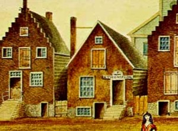

by
Stefan Bielinski
On April 1, 1806, Richard Thompson married Jane Johnson, a colored woman, at the Albany Dutch church. Subsequent research has revealed that he was a "free person of color" - a mainline member of the early nineteenth century Afro-Albanian community.
 In 1814-16, city directories listed him as a housholder living at 22 Fox Street. After that, he was identified as a shoemaker living at 75 North Pearl Street. Although not consistently, his name printed in italics identified him as a "free person of color!" The marriage may have produced children!
In 1830, his second ward household was configured on the Albany census. That is the last reference so far encountered! Perhaps abolitionist Gerrit Smith wrote to him and other Albany activists in March 1846. Or, perhaps his son, Richard Thompson, was buried in the African Methodist Episcopal plot in April 1848!

notes
 Sources: The life of Richard Thompson has not yet been assigned a CAP biography number. This sketch is derived chiefly from family and community-based resources.
Sources: The life of Richard Thompson has not yet been assigned a CAP biography number. This sketch is derived chiefly from family and community-based resources.
Detail of the home of Richard Thompson from a cityscape of early nineteenth-century Albany by James Eights.
first posted: 11/10/04